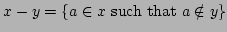

Usage
minus!(x,y)
Signature
minus!: (%, %) %
| Parameter | Type | Description |
|---|---|---|
| x,y | % | sets |
Description
Return .
Remarks
minus! does not make a copy of, which is therefore modified after the call. It is unsafe to use the variable
See Also